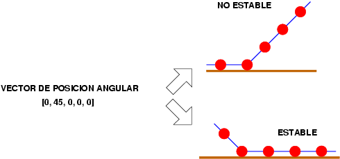
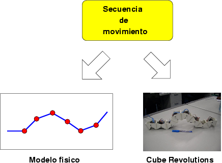

|
CUBE REVOLUTIONS: SOFTWARE III |
Introducción
En este nivel se resuelve parcialmente el problema de determinar qué tipo de movimiento producen en el gusano diferentes secuencias, para poder compararlas. El objetivo es seleccionar de entre todas las infinitas secuencias de movimiento posibles aquellas que hacen que el movimiento sea óptimo. Para logarlo necesitamos establecer un criterio para poder evaluar los efectos que produce cada una de ellas en el gusano. Y pasa eso necesitamos un modelo físico del gusano, que nos informe de cómo se comporta al mover sus servos.
Estados internos, estables e inestables
El estado interno del gusano es el vector de posición angular, que indica el ángulo de rotación de cada una de las articulaciones. Sin embargo, dado un estado interno, el gusano virtual podría estar en muchas posiciones diferentes, pero sólo una de ellas es la estable.
En la siguiente figura se ilustra con un ejemplo para un gusano de 5 articulaciones. Partiendo de un estado interno de [0, 45, 0, 0, 0], que quiere decir que el servo 1 está en su estado inicial (0 grados), el siguiente rotado 45 grados y todos los demás en sus posiciones iniciales, se muestran dos gusanos virtuales con ese mismo estado interno. Uno de ellos está en una situación intestable: si lo colocásemos sobre una superficie horizontal no permanecería en esa posición, sino que se “caería” hacia la derecha. El otro gusano sí que está en una situación estable.
El modelo físico lo que hace es tomar las secuencias de movimiento e ir calculando cuales son los estados estables a partir de los estados internos.
|
 |
Modelo físico
El modelo físico calcula los gusanos “estables” a partir del estado interno (secuencias de movimiento) y del modelo de rozamiento utilizado. El modelo de rozamiento que se asume es el siguiente: al menos habrá un punto de contacto con el suelo que permanecerá fijo y siempre será el más cercano a la cola del gusano. Así, cuando el punto más cercano a la cola entre en contacto con el suelo, se fijará su posición y se utilizará para recalcular las posiciones de los otros, considerándose que este punto de apoyo no “resbala”.
Dada una secuencia de movimiento, bien se puede enviar a Cube revolutions para que se mueva, utilizando el programa cube-play o el Star-servos8, o bien se puede enviar al gusano virtual con el modelo físico implementando, utilizando el programa cube-virtual-play.
|
 |
Implementación del modelo físico: Módulo cube-fisico.c
Programa cube-virtual-play.c
PROGRAMA CUBE-VIRTUAL-PLAY |
DESCRIPCIÓN: Generación de un fichero para OCTAVE para visualizar cómo se mueve Cube Revolutions cuando se utiliza una determinada secuencia de movimiento. La salida se saca por la pantalla, por lo que pasa usarlo desde octave habrá que redireccionarlo a un fichero: $ ./cube-virtual-play test.f8 > test2.m $ octave test2.m
|
FICHERO PARA OCAVE: El fichero de ejemplo generado con cube-play a partir de la secuencia test.f8 se puede descargar de aquí: test2.m |
/************************************************************************/ /* cube-virtual-play. Juan Gonzalez Gomez. Marzo-2004 */ /*----------------------------------------------------------------------*/ /* Reproduccion de fichero .f8 para el gusano virtual */ /*----------------------------------------------------------------------*/ /* LICENCIA GPL */ /************************************************************************/ #include <stdio.h> #include <math.h> #include <unistd.h> #include "vectores.h" #include "secuencias.h" #include "cube-fisico.h" #include "cube.h" /*-------------------------------------------*/ /* F U N C I O N E S P R I V A D A S */ /*-------------------------------------------*/ void inicio() { printf ("\n"); printf ("%%Reproduccion de secuencias para CUBE REVOLUTIONS Virtual\n"); } /*-----------------------------------------------------------*/ /* M A I N */ /*-----------------------------------------------------------*/ int main(int argc, char *argv[]) { FILE *f; int tam; int i; int j; vector_pos_t *v; vector_pos_t *vini; inicio(); /* Abrir el fichero */ f = fopen(argv[1],"r"); if (f==NULL) { printf ("%%Error al abrir fichero"); return 0; } /* Leer los vectores de posicion */ if (!sec_load_vectores(f)) { printf ("%%Fichero NO esta en formato .cube\n"); } fclose(f); tam=sec_num_vectores(); printf ("%%Numero de vectores: %d\n",tam); //-- Iniciar gusano cube_init(); /* Leeer vector inicial */ vini = sec_get_vector(0); cube_fisico_vector_posicionar(vini); /* Repetir la matriz de movimento unas cuantas veces */ for (j=0; j<4; j++) { /* Recorrer la matriz de movimiento */ for (i=1; i<tam; i++) { /* Leer el vector de posicion */ v=sec_get_vector(i); /* Mover las articulaciones */ cube_fisico_vector_posicionar(v); /* Generar comandos para octave */ cube_octave(0,1,3); } } printf ("pause\n"); return 0; } |
Trabajo futuro
El modelo físico realizado no está completo y no es tampoco muy preciso. En los siguientes trabajos se va a utilizar un modelo mucho más real y para ello se va a utlizar el Open Dinamics Engine (ODE).